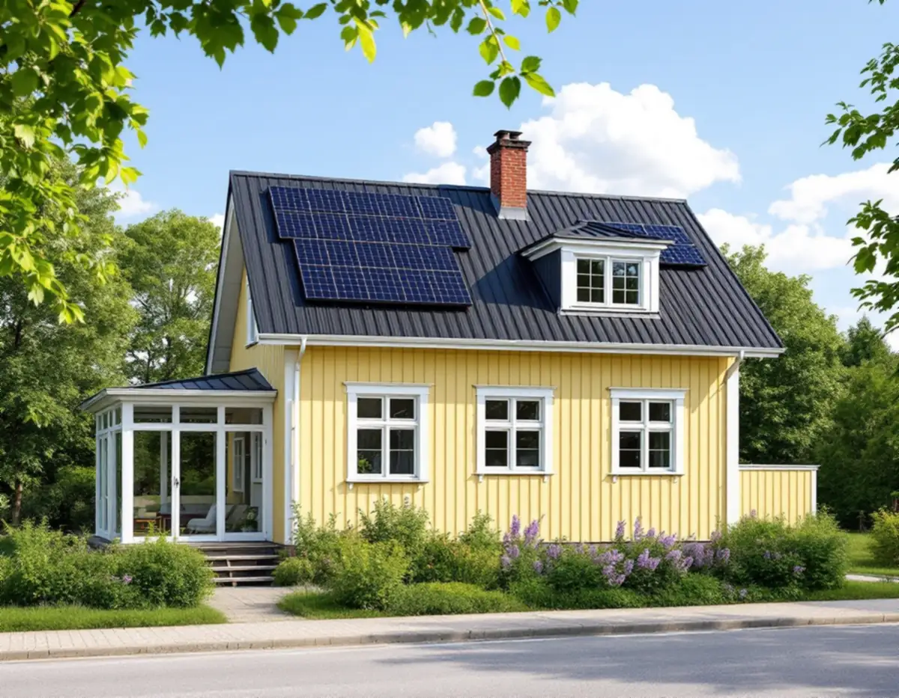
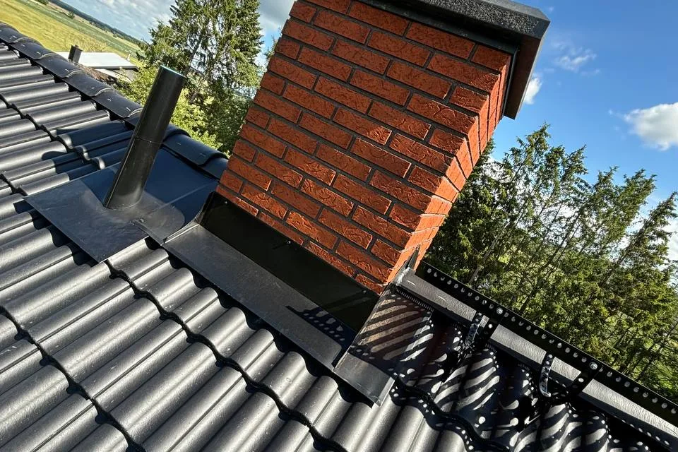

Platsbesök
Vi tittar på takets skick, plåten kring kupor och verandor och var panelerna kan sitta.

Villastäderna i Älvsjö har stora tomter och hus från många olika årtionden.
Skicka gärna en bild på taket.
Något blev fel. Kontrollera uppgifterna eller ring 08 12 410 276.
Vi tittar på jobbet på plats innan du får offert.
Du ser vad som ingår och vad det kostar.
Vi drar av ROT direkt och sköter ansökan.
Geal Entreprenad AB, Bromma. Org.nr 559303-7566.

Den som vill sätta solceller på taket behöver tänka på två saker innan panelerna beställs: att Stockholms stad kräver bygglov för solceller i stora delar av staden, och att taket under panelerna ska hålla lika länge som de. Geal Entreprenad AB har egna plåtslagare och tar tak och solceller i samma projekt i Älvsjö, med gratis platsbesök och skriftligt kostnadsförslag.
Enligt stadens vägledning Varsam utveckling av småhus- och villaområden växte Älvsjö fram som ett stationssamhälle vid järnvägen och fick på 1910-talet status som municipalsamhälle med egen administration och beskattningsrätt. Stadsplanen för Älvsjö villastad togs fram av Per Olof Hallman, enligt samma grundprinciper som hans planer för den tidiga trädgårdsstaden. Fritt liggande hus på tomter om 1 500–3 000 kvadratmeter blev karakteristiskt för villastäderna, medan nyare planer från 1930-talet gav tomter om 700–1 000 kvadratmeter.
Vägledningen beskriver villastädernas hus som individuellt utformade, oftast i trä, där glasverandor, takkupor och snickarglädje ger variation. Genom att tomter har styckats av har nya hus på tomter kring 600 kvadratmeter kompletterat eller ersatt den äldre bebyggelsen, och Älvsjö nämns bland områdena där äldre stadsplaner tillåter generösa byggrätter. På samma gata kan det alltså finnas ett tak från 1920-talet och ett från i fjol, och båda kan vara aktuella för solceller.
Boverket skriver att det i allmänhet inte krävs bygglov för solceller eller solfångare på ett småhus, men att det finns undantag, bland annat inom område för totalförsvaret. Stockholms stad skriver att du behöver bygglov för solceller på en byggnad inom eller i anslutning till Försvarsmaktens riksintresse i ett område med detaljplan, och att det därför krävs bygglov för att sätta upp solceller i stora delar av Stockholm. En anledning är enligt staden att området omfattas av riksintresset för väderradarn i Håtuna.
Till det kommer den kulturhistoriska frågan. Är huset eller området markerat som särskilt värdefullt på Stadsmuseets klassificeringskarta gäller utökad lovplikt, och då krävs bygglov även för åtgärder som annars hade varit lovfria. Staden har också en vägledning för bygglovsprövning av solenergianläggningar, men påpekar själv att den inte är uppdaterad efter lagändringarna 1 december 2025 och att den innehåller fel. Enligt staden krävs anmälan bara när byggnadens bärande delar eller brandskydd påverkas väsentligt.
För dig som villaägare i Älvsjö betyder det att bygglovet bör vara klart innan panelerna och plåten beställs. Vi tar fram mått och bilder på taket som underlag till ansökan och planerar arbetet så att taket och panelerna kan monteras i en följd när beskedet har kommit.
Boverket påpekar att du innan solcellerna monteras behöver kontrollera att taket eller fasaden klarar den nya belastningen, och att regler om brand- och elsäkerhet ska följas. På ett äldre hus i Älvsjö kan det betyda att vi öppnar på ett par ställen och tittar på läkt, underlag och takstolar innan något monteras.
Ett falsat plåttak har en fördel här: fästena för panelerna kan klämmas fast på falsarna, så att plåten inte behöver genomborras. På tegel och betongpannor sker infästningen i stället genom taket, och varje genomföring behöver tätas. Är plåten gammal, eller har taket redan lagts om flera gånger med olika material, är det klokt att byta plåten först. Panelerna sitter länge, och att montera ner dem för ett takbyte några år senare blir dyrt. Mer om det i artikeln solceller på tak, och om plåttak i allmänhet på sidan falsat plåttak.
Takkupor och glasverandor är bland det vägledningen räknar som villastädernas karaktärsdrag, och de är också de ställen där plåten har flest skarvar. En kupa har plåt på tak och sidor och en anslutning mot huvudtaket på varje sida. En glasveranda har ofta ett eget lågt tak, där plåten ska ta emot vatten från det brantare taket ovanför. Där möts flera plåtdetaljer, och det är anslutningarna där som behöver ses över först.
När solceller planeras på ett takfall med en kupa påverkar det också var panelerna kan sitta och hur vattnet rinner runt dem. Vi går därför igenom hela takfallet, med kupa, ränndalar och takfot, innan panelerna placeras. Ska taket som helhet renoveras finns mer under takrenovering i Älvsjö.
Vi tittar på takets skick, plåten kring kupor och verandor och var panelerna kan sitta.
Detaljplan, Försvarsmaktens riksintresse och Stadsmuseets karta avgör om bygglov krävs.
Plåttak, plåtdetaljer och solceller redovisas som egna poster.
Plåten läggs eller lagas innan panelerna monteras, så att infästningarna kan planeras.
Fästena monteras på falsarna eller tätas genom taket, och vi går igenom resultatet med dig.
Att byta ut eller reparera plåttak, hängrännor och stuprör på ett småhus är rotarbete enligt Skatteverket. Det gäller också att montera och montera ner byggnadsställningar i samband med rotarbetet.
Avdraget är 30 procent av arbetskostnaden för takarbetet, högst 50 000 kronor per person och år och högst 75 000 kronor tillsammans med rutavdrag. Material och resor ger inget avdrag. Vi drar avdraget direkt på fakturan.
Takets storlek och lutning, om plåten ska bytas eller bara lagas, hur många kupor och verandatak som finns, hur panelerna fästs och vilken ställning som behövs. Efter ett gratis platsbesök får du ett skriftligt kostnadsförslag.
Plåttak, hängrännor och beslag.
Plåtslagare i Stockholm →Takbyte, takbesiktning och plåtarbeten.
Takläggare i Älvsjö →Långbro, Herrängen och Långsjö.
Takrenovering i Älvsjö →Villatomten, prickmarken och vattnet.
Attefallshus i Älvsjö →Villorna, träbjälklaget och golvvärmen.
Badrumsrenovering i Älvsjö →Byggrätt, gamla planer och planändring.
Byggföretag i Älvsjö →Puts nedtill, panel upptill.
Fasadmålning i Älvsjö →Villastad, nya grannhus och puts på trä.
Fasadrenovering i Älvsjö →Fönster och tilläggsisolering.
Fönsterbyte i Älvsjö →Småspröjs och fönsterluckor.
Fönsterrenovering i Älvsjö →Golvvärme under trägolv i äldre villor.
Golvläggare i Älvsjö →Slipa och ge golvet en ny kulör.
Golvslipning i Älvsjö →Villastad, flerlägenhetsvillor och kök i lager.
Köksrenovering i Älvsjö →Villastad, egnahem och småstugor i Älvsjö.
Målare i Älvsjö →Staket, grind och plank i villastaden.
Snickare i Älvsjö →Vinden, kupan och byggrätten.
Takbyte i Älvsjö →Bårder och dekor i villastaden.
Tapetsering i Älvsjö →Byggrätt, trädgårdssida och volym.
Tillbyggnad i Älvsjö →Villastaden, elen och köket.
Totalrenovering i Älvsjö →Eller ring 08 12 410 276, mån–fre 08–17.
Skicka gärna en bild på taket.
Något blev fel. Kontrollera uppgifterna eller ring 08 12 410 276.